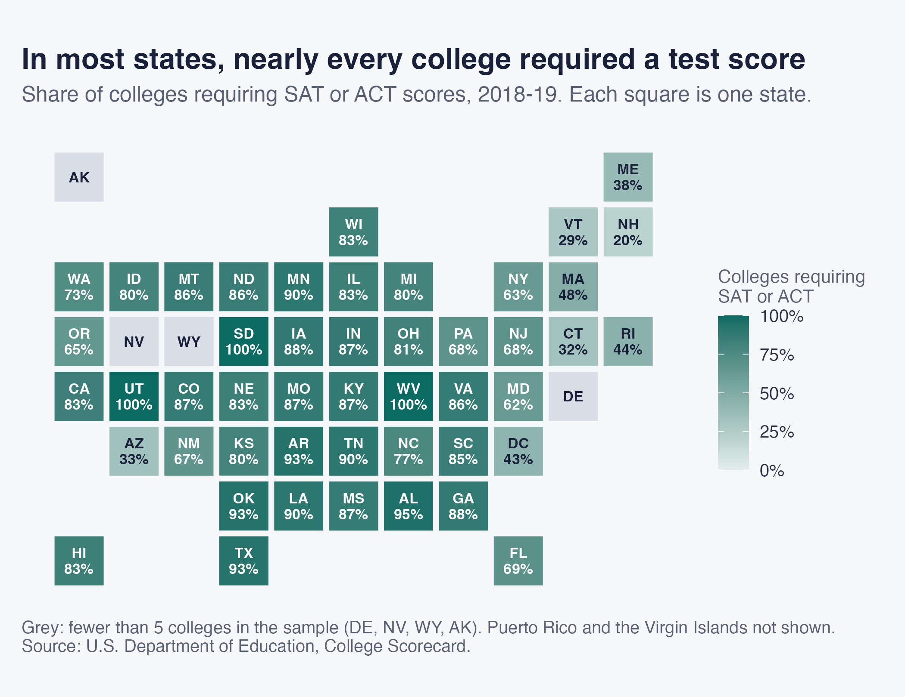
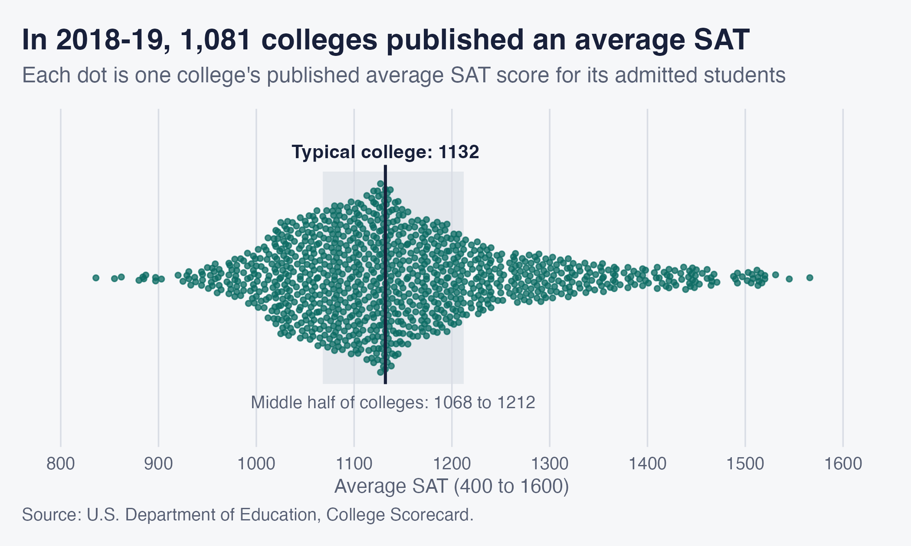
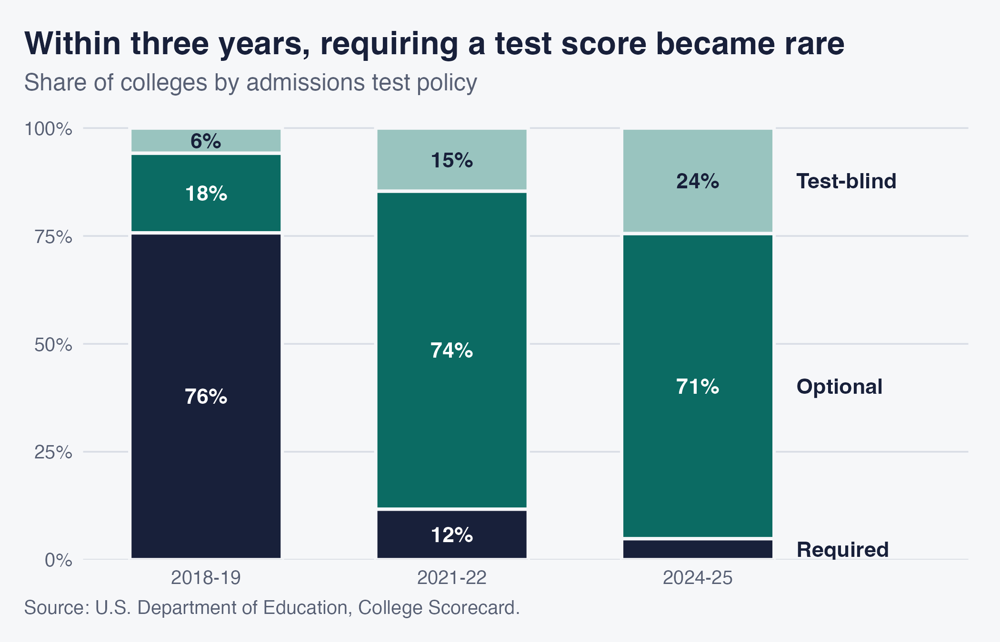
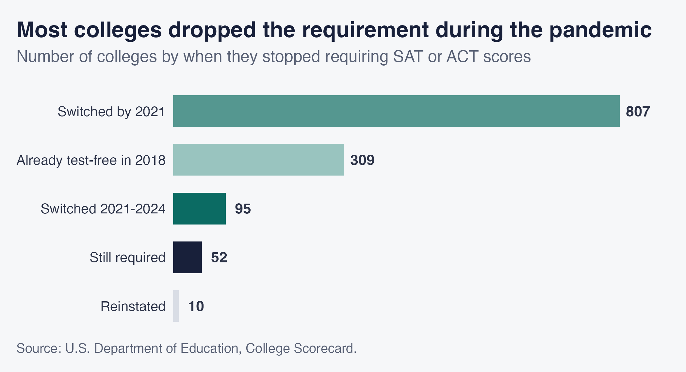

The scores got better because fewer people sent them
What test-optional admissions did to the SAT numbers colleges publish
Before looking at what happened to scores, it helps to see where colleges started and how fast they moved. The first two charts show the world before the pandemic. The next two show the shift away from testing and sort colleges into the groups that the rest of the project compares.
Part 1: Before the pandemic
Chart 1: Testing was the norm

In 2018-19, 76% of the colleges in this project required an SAT or ACT score. Public colleges were the most likely to require one (88%), but most private nonprofit colleges did too (69%). In South Dakota, Utah and West Virginia, every college in the sample required a score, and much of the South and Midwest was above 90%.
The clear exception was New England. Only 20% of colleges in New Hampshire required a score, along with 29% in Vermont, 32% in Connecticut and 38% in Maine. The region is home to many small private liberal arts colleges, a group that had been moving away from testing for years before the pandemic. Outside New England, only Arizona and Washington, D.C. were below half, and both have fewer than ten colleges in the sample.
So for most students in most states, sending a score was simply part of applying. That is the baseline the rest of the project measures against.
Chart 2: What reported scores looked like then

Each college reports an average SAT score for the students it admits, with ACT scores converted to the SAT scale. In 2018-19, 1,081 colleges in the sample published one. The typical (median) college reported 1132, and the middle half of colleges fell between 1068 and 1212, a range of less than 150 points. The lowest average was 836 and the highest was 1566. Only a small group of highly selective colleges sits above 1300.
Because most of these colleges required a score, the averages in this chart mostly describe everyone they admitted. That is what makes 2018-19 a useful reference point. When a score becomes optional, the same number starts to describe only the students who chose to send one.
Part 2: The shift
Chart 3: Requirements collapsed

The shift was fast. The share of colleges requiring a test score fell from 76% in 2018-19 to 12% in 2021-22, and then to 5% by 2024-25. In three admissions cycles, a requirement that had been the norm became uncommon.
Most colleges did not stop using scores altogether. They made them optional: 74% of colleges were test-optional in 2021-22 and 71% in 2024-25. The share that does not consider scores at all, shown here as test-blind, grew more slowly, from 6% to 15% to 24%.
The difference matters for this project. A test-optional college still accepts scores and still reports an average, but only from the applicants who decided to submit. Since test-optional colleges are now the large majority, most published averages now come from a group of students that each applicant chose to join or not.
Chart 4: Colleges switched at different times

Not every college made the change at the same time, and the timing is what lets us compare them. Of the 1,273 colleges, 807 (63%) dropped their requirement by 2021-22, in the first cycles after the pandemic began. Another 309 (24%) were already test-free before it started. A smaller group of 95 (7%) held on through 2021-22 and dropped the requirement by 2024-25. Just 52 colleges (4%) required scores in all three years, and 10 dropped the requirement and then brought it back.
The rest of the project compares these groups. The 52 colleges that still require scores matter most, even though they are few. Every admitted student at these colleges still has a score, so their averages show what happened to scores when nothing changed about who reports them. Most of them are public, as are 8 of the 10 colleges that reinstated a requirement. The reinstated group is too small to analyze, so it is set aside in the later comparisons. Some later charts also combine the two switch groups as colleges that “dropped the requirement.”
If optional testing pushed published averages up, scores should rise wherever sending them was optional and should not rise where it was required.
Data: U.S. Department of Education, College Scorecard, accessed through the rscorecard package.